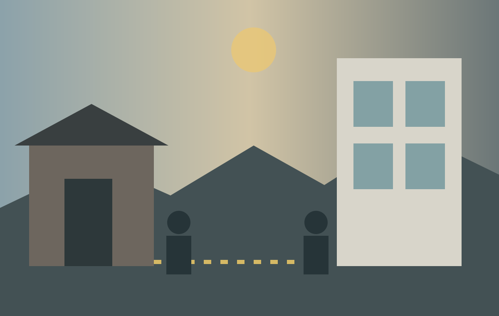

Living without security
Microhabitat and Burning
Film still: Microhabitat (Jeon Go-woon, 2018), reproduced by ScreenAnarchy.
A home maintained for everyone except herself
Miso gives up her rented room rather than abandon cigarettes and whisky. This may initially seem irresponsible, but the film asks what “choice” means when insecure work no longer pays for stable housing. As she stays with old friends, their apartments reveal that conventional success—marriage, mortgages and stable employment—also demands compromises.
As a female domestic worker, Miso maintains other people’s homes without being able to secure one of her own. Her movement between rooms makes a quiet form of exclusion visible. She is not removed by a dramatic police action, yet rising costs gradually push her outside ordinary housing.

Distance without explanation
Burning contrasts Jong-su’s precarious work with Ben’s unexplained wealth. Ben moves through stylish apartments and fashionable social spaces with ease. Jong-su lives in Paju near the North Korean border and drifts between short-term jobs and family responsibilities. Their different homes show the distance between them more clearly than direct dialogue does.
Haemi’s small room and debt place her in an insecure position. After she disappears, few people seriously search for her. The film links economic marginality with social invisibility: someone with limited money, space and influence can vanish without creating much public concern.
Different forms of exclusion
| Film | Key space | What it reveals |
|---|---|---|
| Parasite | House, semi-basement, stairs | Class is organised vertically and experienced through daily comfort or risk. |
| The Remnants | Redevelopment zone | Urban change involves institutions, force and unequal rights to remain. |
| Microhabitat | Temporary rooms | Precarious work makes stable housing difficult even without formal eviction. |
| Burning | Paju, Seoul apartments | Distance, mobility and visibility reflect unequal opportunity. |